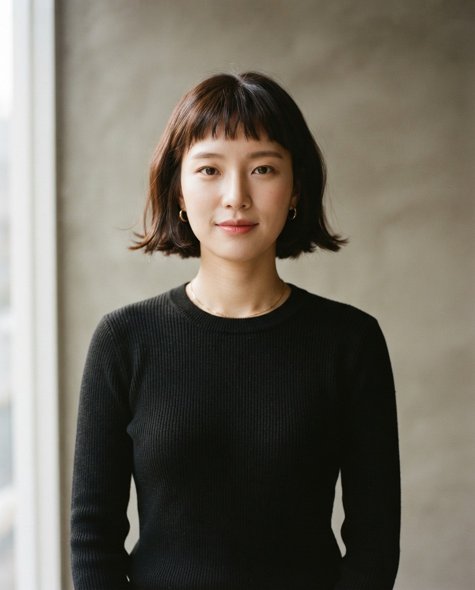
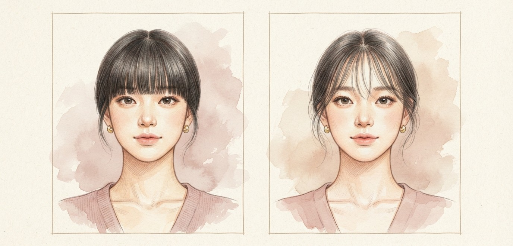
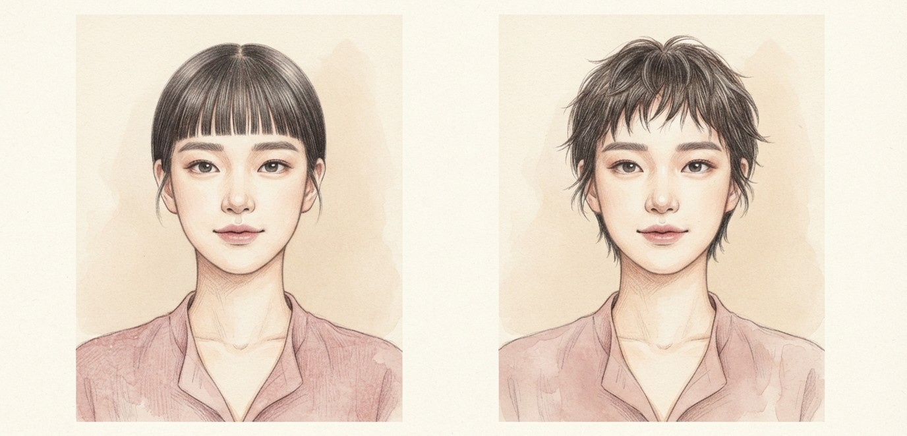
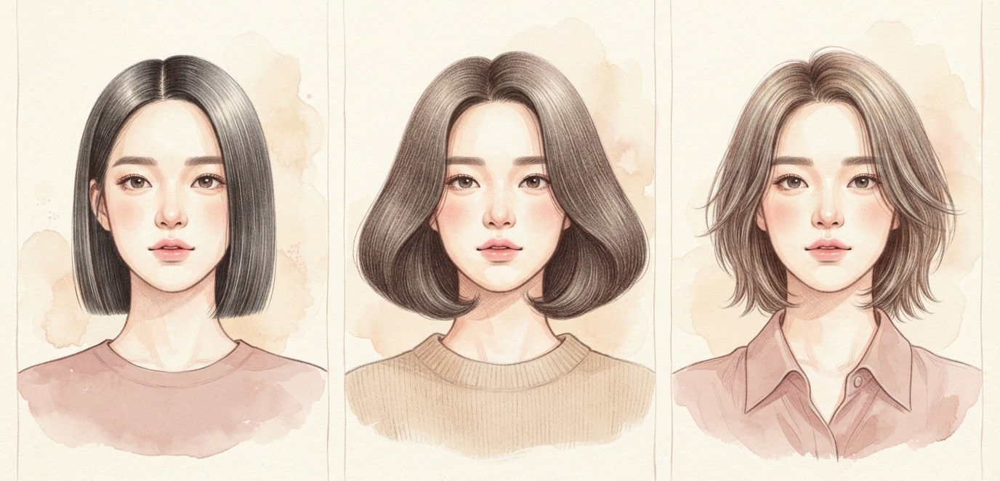
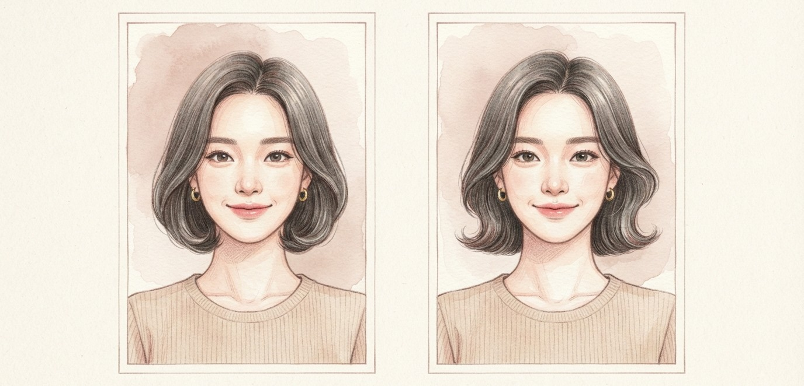
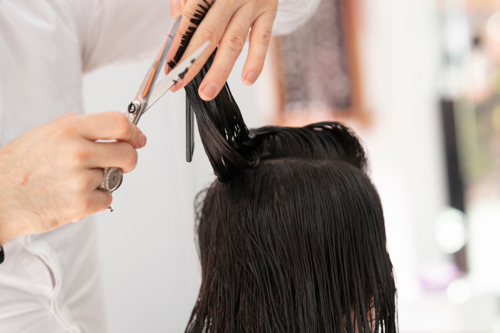

길이보다 중요한 건 끝 마무리.
미용실 가기 전에 저장해 두세요.

촘촘하게 채우면 키치하고 강렬하지만, 이마에 가로선이 생겨 얼굴 폭이 넓어 보일 수 있어요.
모발이 굵거나 숱이 많다면 사이사이 이마가 보이게 숱을 쳐 달라고 하세요. 훨씬 가벼워 보여요.

굵고 숱 많은 모발은 끝 길이를 불규칙하게 잘라 무게를 덜어요.
가늘고 숱이 적다면 길이선은 유지하고 끝만 살짝 질감 처리해요.
광대가 신경 쓰이면 양옆을 관자놀이 따라 길게 이어 주세요.

직모에 모발이 가늘거나 보통이라면 반듯한 원랭스 보브도 쉽게 소화해요.
굵고 숱이 많으면 밑단에 무게가 몰려 양옆이 부풀어요. 안쪽 숱만 덜어 달라고 하세요.
숱이 적은데 끝을 많이 치면 밑단이 빈약해 보이니 주의해요.

볼 옆이 아닌 턱 아래에서 바깥으로 빼요.
한 방향 말고 여러 방향으로 흩뜨려요.
턱 주변에 볼륨이 생기게 빼 줘요.

"눈썹 위로 자르고, 사이사이 이마가 보이게 숱 쳐 주세요."
"끝 길이를 조금씩 다르게 삐죽하게 잘라 주세요."
"전체 길이는 맞추되 끝의 무게만 살짝 덜어 질감 살려 주세요."
짧게 자른 앞머리가 애매하게 자랐다면 다시 자르지 말고
한쪽으로 사선으로 쓸어 넘겨 보세요. 시크한 분위기가 돼요.
저장해두고 쇼핑할 때 꺼내보세요